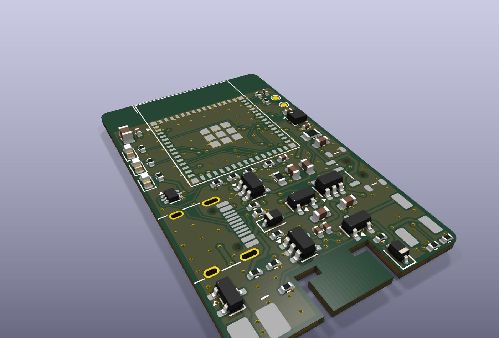
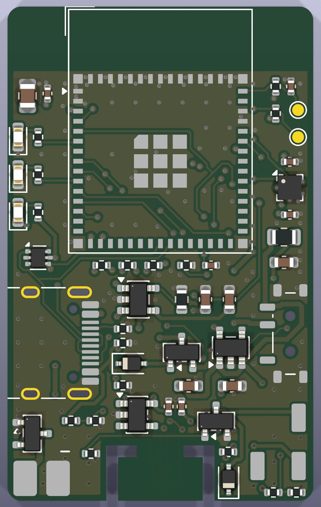
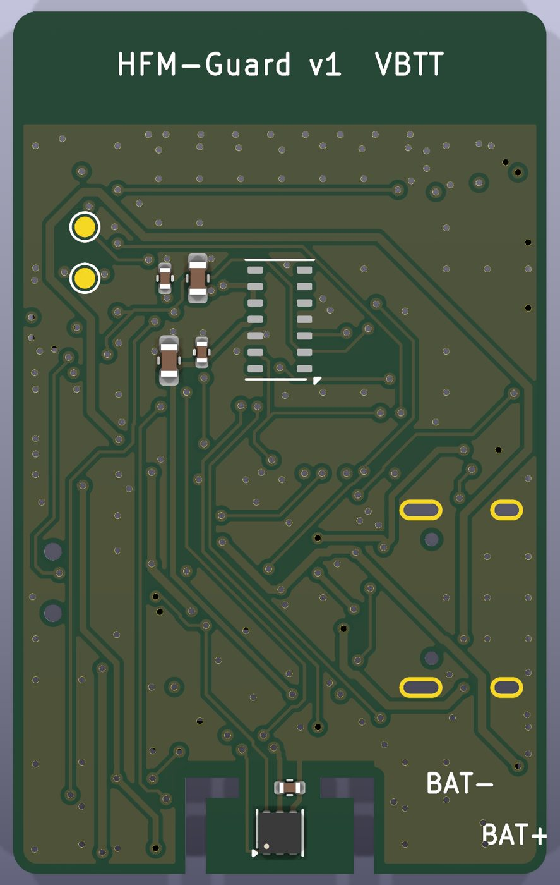

Bản dự thi dùng sáu mô-đun rời nối bằng dây. Bước tiếp theo là gom tất cả lên một tấm mạch in duy nhất, để thiết bị nhỏ bằng khoảng một phần ba và không còn dây hàn tay giữa các khối. Thiết kế đã xong và qua kiểm tra luật thiết kế; nhóm chưa đặt sản xuất.



| Hạng mục | Giá trị |
|---|---|
| Kích thước · số lớp | 26 × 42 mm · 4 lớp · dày 1,0 mm |
| Phân lớp | Trên: linh kiện + tín hiệu · Lớp 2: GND · Lớp 3: 3,3 V · Dưới: tín hiệu + cảm biến da |
| Linh kiện | 57 con gắn máy (50 mặt trên, 7 mặt dưới), 31 loại |
| Đường mạch / khe hở nhỏ nhất | 0,15 / 0,15 mm · lỗ xuyên 0,6 / 0,3 mm |
| Kiểm tra luật thiết kế | 0 lỗi · 0 mối nối hở |
| Không dây | WiFi 2,4 GHz + Bluetooth LE 5, ăng-ten trên mô-đun, vùng cấm đồng 5,5 mm |
| Khối | Linh kiện | Ghi chú |
|---|---|---|
| Vi điều khiển | ESP32-S3-MINI-1 | Cùng họ chip với bản mô-đun → giữ nguyên chương trình |
| Nhịp tim | MAX30102 | Mặt dưới, áp da; nguồn 1,8 V tắt/bật được để tiết kiệm pin |
| Nhiệt độ | TMP117 (±0,1 °C) | Thay MAX30205 do hết hàng; cùng địa chỉ I²C 0x48 |
| Cử động | LIS2DH12 | Thay ADXL362 do hết hàng; chung đường I²C nên bớt 4 dây |
| Sạc pin | MCP73831, 256 mA | Hợp pin 300 mAh; có chống cắm ngược cực pin |
| Nguồn | ME6211 3,3 V và 1,8 V | Tự chuyển giữa USB và pin |
| Cảnh báo | Còi 5 × 5 mm, 2 đèn | Còi lấy điện thẳng từ pin để không làm sụt nguồn vi điều khiển |
SDA 4 · SCL 5 · đèn đỏ 2 · đèn xanh 6 · còi 7 · đo pin 1 · dò cắm sạc 8 · bật nguồn cảm biến nhịp tim 9 · ngắt gia tốc 12 · ngắt nhịp tim 13